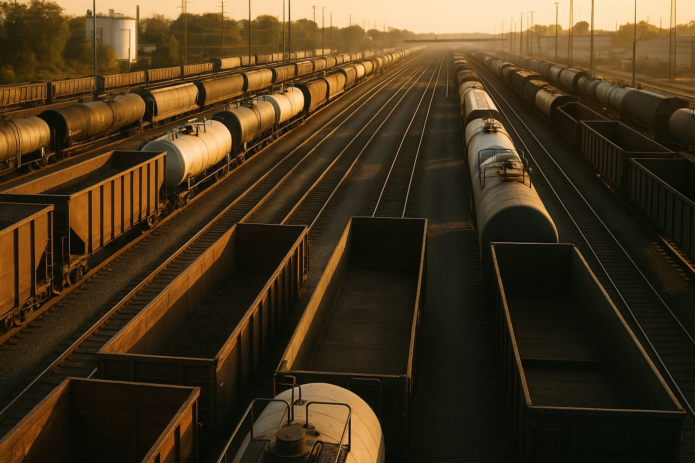
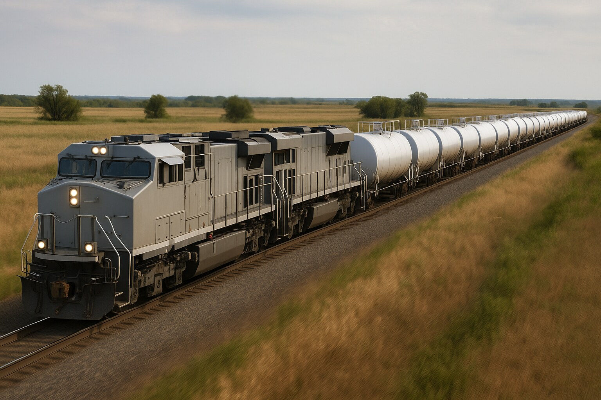

Specialized rail freight coordination — from carrier outreach to final delivery.
The services below can be engaged a piece at a time. Most shippers who don’t have a rail person on staff want all of it, ongoing — that’s our outsourced rail department: carrier outreach, rate sourcing, car supply, demurrage, and transload, handled week over week so you don’t have to build the expertise in-house.

Working directly with Class I carriers (BNSF, UP, CSX, NS, CN, CPKC) and regional short lines is hard. We have the contacts and the patience. We help you reach the right people and get rates back, so you can stop chasing.

Full carload and unit train coordination for high-volume bulk shipments. We line up the carriers and the cars — without taking title to the freight, so your dollars stay in your supply chain.
Not every destination has rail access. We coordinate the rail-to-truck handoff through our transload network, plus manage facility logistics to keep your commodity pipeline flowing. Full detail on our rail transload services page.

Per-diem charges are a quiet drain on bulk shippers. We help you find the operational causes and work with the carrier on the conversations that follow.
Try our free demurrage calculator to estimate charges on a specific scenario.

Whether you run your own railcars or pull from the railroad’s pool, the day-to-day still falls on the shipper. We handle the coordination so you can focus on the load.
We work with shippers across industries that rely on rail to move the stuff that keeps America running:
If you move high-volume commodities and rail could beat your current trucking cost, we should talk. See our rail vs. truck cost comparison guide to benchmark your lane.
A 3PL covers every mode — truck, rail, ocean, air. We don’t. We’re rail-first. Working directly with the railroads is slow and full of jargon, so our job is to make it easier for you — sourcing rates, coordinating carriers, and solving rail problems day in and day out. We coordinate the move; we don’t haul the freight. If your shipment doesn’t belong on rail, we’ll tell you.
We work with small and mid-sized shippers. Single carloads and manifest shipments are our bread and butter — if you’re moving at least one car a month on a steady lane, we can help. Larger volumes scale up the same way. Read our first-time rail shipper guide if you’re just starting.
All Class I carriers — BNSF, Union Pacific, CSX, Norfolk Southern, CN, CPKC — plus regional short lines and terminal carriers where those connections matter. Each has different pricing dynamics and different responsiveness. We help you pick the right routing and reach the right people.
Yes. Demurrage is the #1 surprise cost for new rail shippers. We pre-plan car supply, track constructive placement, and coordinate loading windows to keep your free time intact. Our demurrage avoidance guide covers the basics.
Yes. We coordinate rail-to-truck handoffs at transload facilities across the network. If your customer isn’t rail-served, we’ll design a route that gets the commodity there via rail for most of the distance and truck for the last leg.
Rail freight pricing has several layers — line-haul rates, fuel surcharges, accessorials, and car hire. We help you source rates across the full stack, not just the base line-haul. See how rail pricing actually works for a breakdown, or run a quick estimate with our rail rate calculator.
Guides from our blog that cover the topics above in more depth:
If you want to build in-house rail expertise, our free courses cover everything from fundamentals to advanced topics: